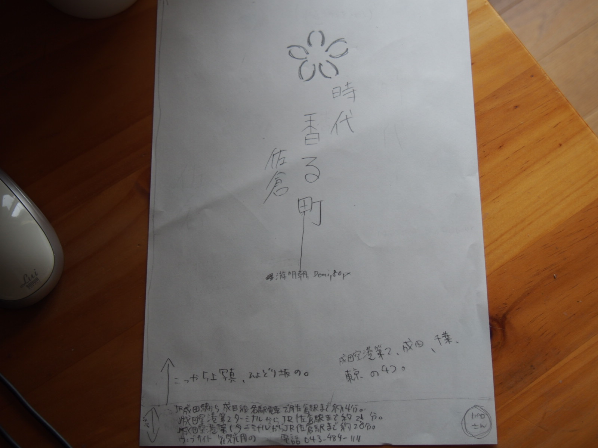

HELLO.
WELCOME TO MY PORTFOLIO.
Who I am
鹿島学園高等学校卒後、
約１年間ヒューマンアカデミーでお世話になる。
Love
うさぎ、英語、ゲーム、海外ドラマ鑑賞、海外映画鑑賞、静かなカフェに行く。
特に本屋さんの横についているカフェが好き。
What I Can Do!

HTML & CSS

JavaScript

Illustrator

Photoshop
What I Made
My Portfolio
現在のサイトです。
今までに作った作品を載せているサイトです。
このサイトはHTML,CSS,JSを使って作成しました。
Logo
Photoshop,Illustratorの操作の練習をしたくて、
youtubeで作り方の動画を見ながら作って見ました。
佐倉市ポスター

最寄駅に貼ってあった京都のポスターが綺麗だったので、
京都の嵐山の竹林をイメージして作って見ました。
なぜ京都をイメージして作ったかというと、
旅行で京都に行けなかったのが悔しくて、
旅行に行けなかった分、少しでも京都を感じたかったので作りました。
komorikomasha
本を見ながら、ヒューマンアカデミー集団クラスではじめて作ったウェブサイトです。HTML,CSS,jQueryを使って制作しました。
この本を使いました。amazonに飛びます。
おみくじ
ドットインストールのJavaScript講座を見て作りました。
元々は大吉、中吉、凶の中で中吉が多く出るようにしてあったので、
自分でアレンジをしてたくさん凶が出るおみくじを作って見ました。
デザインは私が少し手を付け加えました。